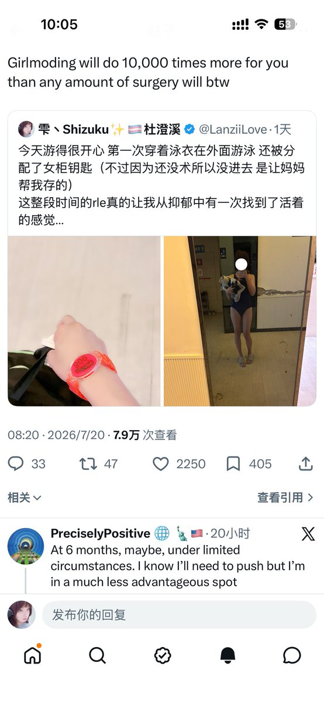
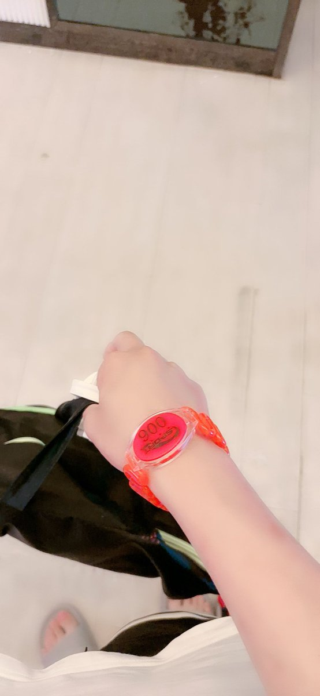
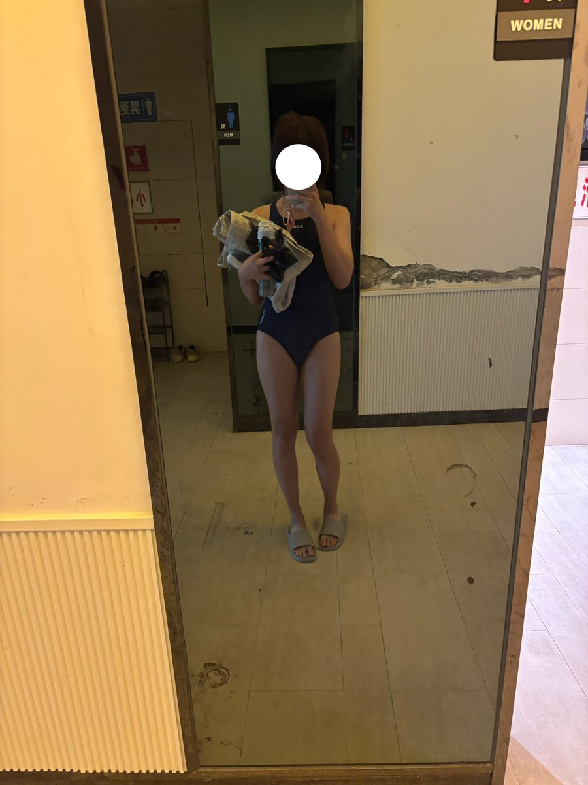

I’ve noticed a post discussing about girlmoding and surgery lately. I wont give any opinion on which is right and which is not. But for me girlmoding and surgery have different meaning for each person. For example, for me, who lives in China, the SRS(Genitals) means most to me as it’s the only way for me to be identified as a biological female by law and acquire a female identity. And that means only through this could I marry my boyfriend and go to female spaces like bathroom and changing room. But for someone else surgeries like ffs and voice surgeries may do more help. This all depends on individual. As we are all in different conditions so what makes YOU relaxed and comfortable most is the most important thing. No matter it’s hrt, ffs or srs. Just choose the ones that make you happy and then that’s enough.
Be happy girls :) that’s more important than anything.

Be happy girls :) that’s more important than anything.



今天游得很开心 第一次穿着泳衣在外面游泳 还被分配了女柜钥匙（不过因为还没术所以没进去 是让妈妈帮我存的）
这整段时间的rle真的让我从抑郁中有一次找到了活着的感觉
这才是我本该活成的模样 https://t.co/4w9ern9HZX https://t.co/d7aWdzQcA5
这整段时间的rle真的让我从抑郁中有一次找到了活着的感觉
这才是我本该活成的模样 https://t.co/4w9ern9HZX https://t.co/d7aWdzQcA5